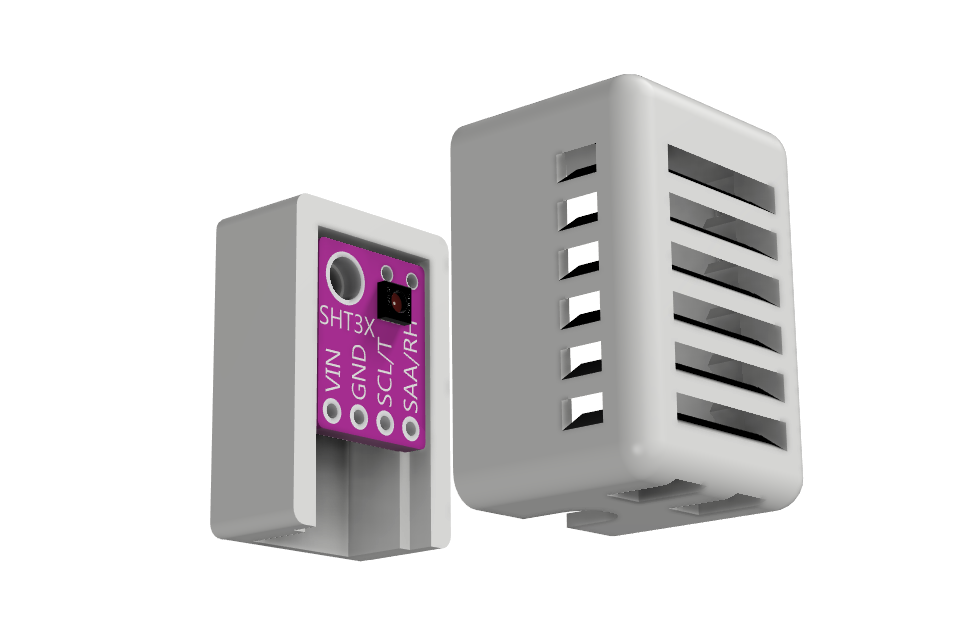
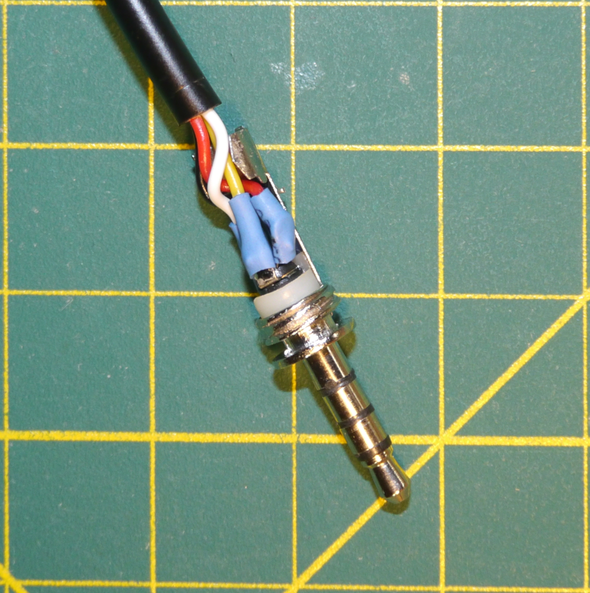
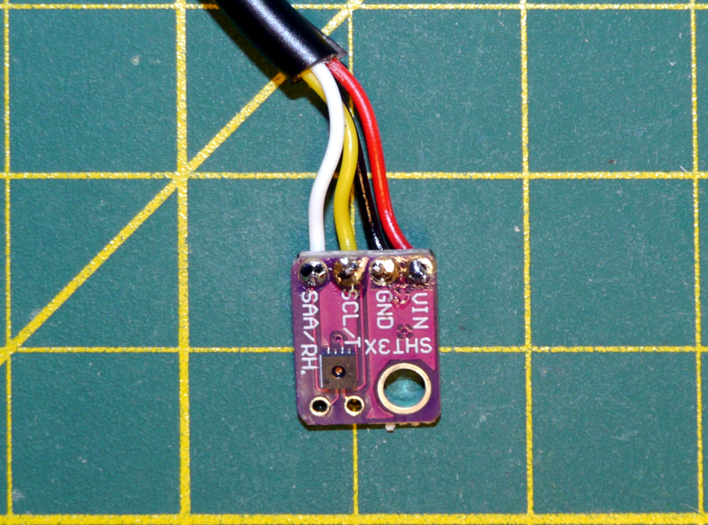
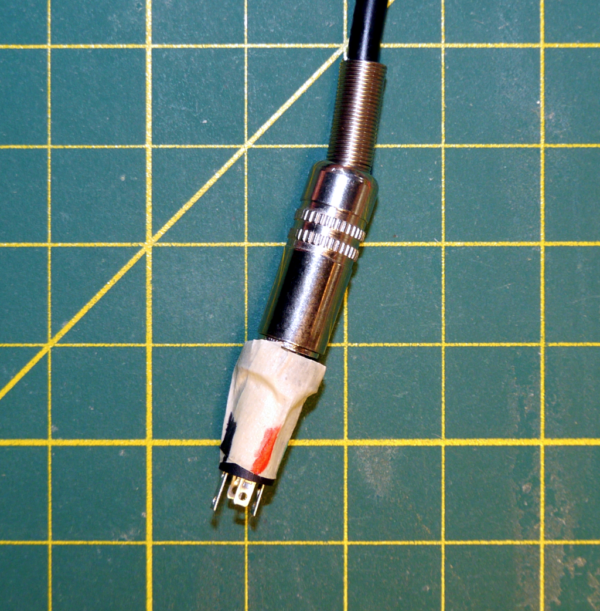
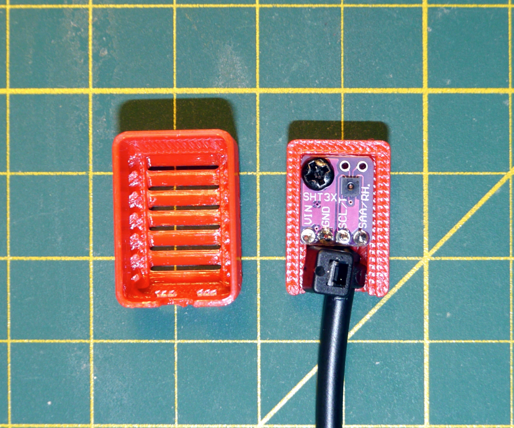
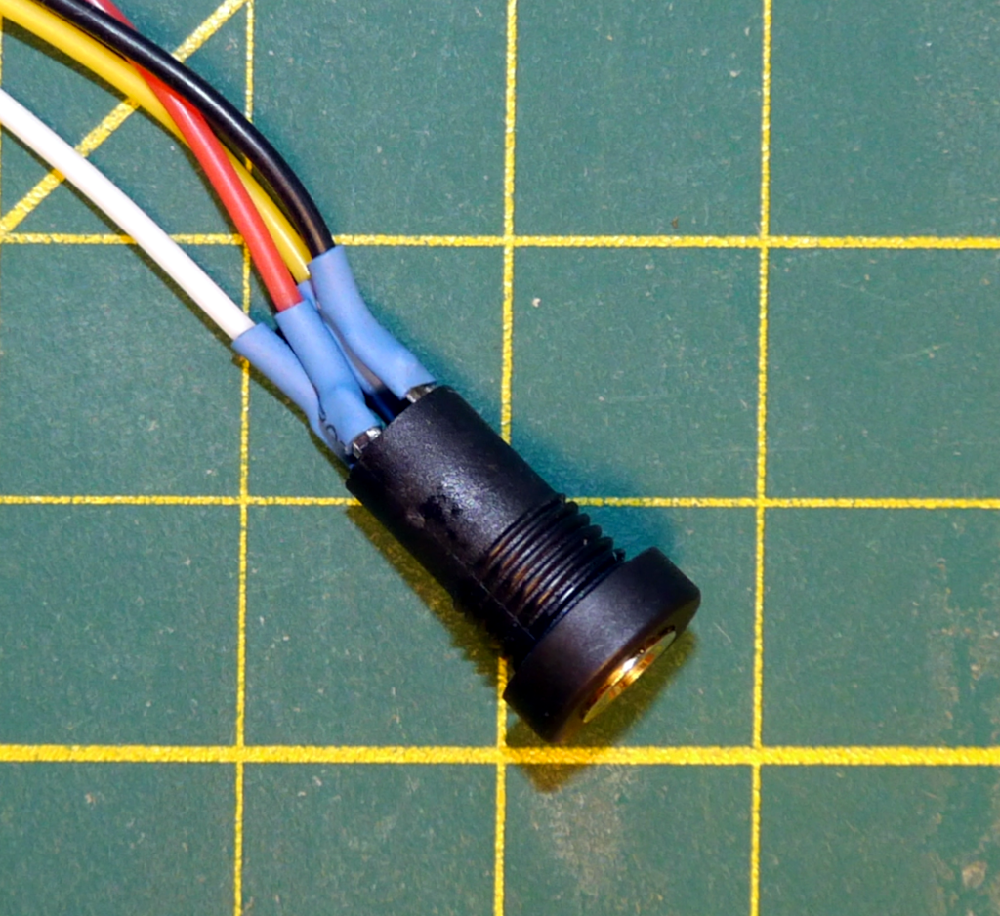
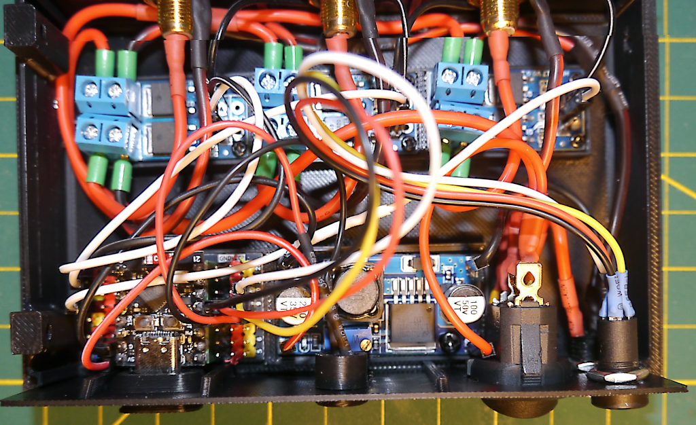

Add a Humidity Sensor to your CheapoDC
CheapoDC support for an "Internal" Weather Source was added in firmware V2.3.0. This internal source is actually a SHT3x sensor that can be added to the CheapoDC and used to provide ambient temperature and humidity readings. The SHT3x sensor connects to the ESP32-C3 in the CheapoDC via I2C as well as requiring a ground and 3.3V connection. This document provides information on adding the sensor to the 3‑Output and 6‑Output CheapoDC example builds.
The SHT3x sensor must be mounted outside the CheapoDC case to get ambient readings. The sensor should also be protected from dust, dirt, and any dew accumulation while still allowing air to circulate around the sensor. A SHT3x sensor may be purchased with a suitable enclosure or you can 3-D print your own enclosure. This build guide uses a 3-D printed enclosure, some 4-core cable along with a 4-pole audio jack and plug to create a detachable sensor assembly or probe.
Parts List
| Item | Item Cost | Comments |
|---|---|---|
| SHT3x Humidity Sensor | US$1.50 | This is an SHT30 humidity sensor but any of the SHT3x series of sensors should be acceptable. The Sensirion
SHT3x library is used in the CheapoDC firmware. The library repository lists supported sensors. The 3-D probe cover
is designed for the module in the link.
Note: The probe cover will NOT accommodate pins soldered to the sensor module. |
| 3.5mm Audio Plug | US$0.50 | Plug/connector required for SHT30 sensor probe. Important: 4-pole required for VCC, GND, SDA and SCL lines. |
| 3.5mm Audio Jack | US$1.25 | Jack required for plugging sensor probe into CheapoDC. Important: 4-pole required for VCC, GND, SDA and SCL lines. |
| 4-wire core cable | US$4.00 | Cable used to connect sensor to plug. 28awg or 26awg cores. Important: 4 core wires required for VCC, GND, SDA and SCL lines. |
| Dupont jumpers | US$2.00 | 4 needed from a package of 20, Female to Female Dupont jumpers, 20cm long. Used to connect the 3.5mm audio jack to the ESP32-C3. |
Additional Items
- Heat shrink tubing to insulate solder joints. Not strictly required but recommended. The steps below do not mention applying heat shrink tubing but it is a good idea to do so after soldering connections. When assembling the probe plug, you'll need to remember to slide small pieces of tubing onto the wires before soldering them to the plug terminals.
- Small, narrow cable tie (3.5mm wide or less). Can be used to help provide strain relief on the solder joints in the sensor probe.
- You can make your own Dupont cables. If so, you may want to use silicone wire. Silicone wire is very flexible and much easier to work with in small spaces, especially with the tight 6-Outlet build. 28awg or 26awg wire is a good choice.
3D-Printed Probe Case
STL and STEP files are provided in the repository with all the CheapoDC 3D models. The probe case is designed to fit the SHT30 sensor module linked in the parts list. The case consists of two parts, a back piece and a front piece. The front piece is a friction fit to the back piece. The sensor is mounted to the back piece with the sensor facing forward with the 4 solder points for VCC, GND, SCL and SDA wires oriented downwards. Once the front piece is fitted to the back piece, with the probe cable exiting downwards, the case allows ventilation while preventing dust and moisture accumulation on the sensor.
The mounting hole in the sensor module is 3mm in diameter. A 3mm or 2.5mm by 5mm long screw may be used to secure the sensor module to the back piece.

Assembly Steps
Assembly consists of two main parts, assembly of the sensor probe and installation and wiring of the sensor jack.
Probe Assembly
-
Solder Probe Cable to Audio Plug
Cut the 4-core cable to the desired length for your sensor probe. Strip about 25mm of the outer insulation from one end of the cable and then strip about 5mm of insulation from each of the 4 inner wires. Tin the exposed wire ends with solder.
Solder the wires to the audio plug as follows:
- Tip - VCC (3.3V) Red wire.
- Ring 1 - SCL (Clock) Yellow wire.
- Ring 2 - SDA (Data) White wire.
- Sleeve - GND (Ground) Black wire.
Note: The actual color of the wires is not important but keeping track of which color wire connects to which sensor connection is critical.
Finish assembling the audio plug. If your plug is the same as referenced in the parts list then slide the insulating tube on first, then the strain relief piece and then finally screw on the plug body.

Solder Audio Plug Connections -
Solder Probe Cable to Sensor Module
Strip and tin the other end of the cable similar to what was done in the first step. Then solder the other end of the probe cable to the SHT3x sensor module. The 3D-printed case is designed to hold the sensor module with the cable wires mounted on the back of the module. Feed the wires from the back of the module and solder them as follows:
- VCC (3.3V) - Red wire.
- SCL (Clock) - Yellow wire.
- SDA (Data) - White wire.
- GND (Ground) - Black wire.
If your wires are a different color then make sure the you are following your pin to wire color mapping.

Solder SHT3x Connections -
Map Audio Plug and Audio Jack Connections
Now that the probe connections are all soldered it is a good time to map the plug connections to the jack connections. Insert the plug into the jack and wrap the jack in a piece of masking tape as shown in the image. Use a multimeter in continuity mode to determine which connection on the jack corresponds to each connection on the sensor module. Record this information on the tape. Either use color coding or write the sensor pin names on the tape.

Mapping Audio Jack Connections -
Mount the Sensor and Assemble the Case
If you want to provide additional strain relief for the solder joints on the sensor then tightly wrap a small cable tie around the cable close to the sensor module. Trim off the excess length of the cable tie.
Using a small screw, mount the sensor module to the case back. Then making sure to trap the cable tie inside the case, press the case front onto the case back. The friction fit should hold the two pieces together securely.
The sensor probe assembly is complete

Mounted SHT3x Sensor
Jack Installation
-
Solder Dupont Jumpers to the Audio Jack
Select 4 jumpers, preferably colored red, yellow, white, and black or matching your sensor probe wire colors. Cut the Dupont connector off one end of 4 jumpers keeping enough length to reach from the audio jack to the ESP32-C3 inside the CheapoDC case. Make sure to leave a female Dupont connector on the wires. Strip about 1/4 inch of insulation from each of the 4 wires and tin the exposed wire ends with solder.
Solder the wires to the audio jack making sure to match the pin to wire mapping you recorded earlier.

Soldered Audio Jack -
Install the Jack
This assumes the use of one of the CheapoDC 3D-printed case switch-panels with an 8.5mm hole for the jack. Feed the Dupont connectors through the 8.5mm hole. The feed them through the jack nut. Insert the jack into the panel hole and tighten the the jack nut.
Connect the Dupont jumpers to the ESP32-C3 as follows:
- Red wire (VCC) to ESP32-C3 pin 3V3.
- Yellow wire (SCL) to ESP32-C3 pin GPIO9.
- White wire (SDA) to ESP32-C3 pin GPIO10.
- Black wire (GND) to ESP32-C3 pin GND.

Jack installed in 3‑Output Build
Configuration
After plugging the sensor probe into the jack, power up the CheapoDC. Do not insert or remove the sensor probe while the CheapoDC is powered on as this may damage the SHT3x sensor or the ESP32-C3. Browse to the CheapoDC Web UI and go to the Device Management page. Scroll down to the Humidity Sensor Configuration section. Set the SDA GPIO to 10, click update, then set the SCL GPIO to 9 and click update. Wait 10 seconds for the settings to be saved to the CheapoDC configuration file then scroll down and reboot the device.
After rebooting go to the Controller Configuration page. Set the Weather Source to Internal Source and Update. Scroll up to Temperature Mode. The Weather Source temperature should be displaying the temperature from the sensor. The Humidity entry should be showing the humidity from the sensor.
Issue Resolution
- If the Weather Source cannot be set to Internal Source then the I2C communications cannot be initialized. There may be an issue with the sensor or wiring. Double check all wiring and connections. Make sure the sensor probe is plugged in.
- If the temperature reading is showing -127.0°C and the humidity reading is showing 0% then sensor readings are failing. There may be an issue with the sensor or wiring. Double check all wiring and connections. Make sure the sensor probe is properly plugged in.
- Temperature and humidity values do not look correct. It may be that the sensor needs a few minutes for the probe and the air in the probe case to stabilize. Wait 5 minutes and check the readings again.